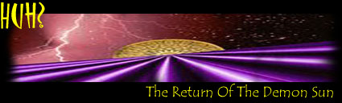
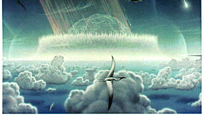
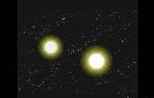

<html>


<!-- Mirrored from www.exitmundi.nl/Nemesis.htm by HTTrack Website Copier/3.x [XR&CO'2014], Mon, 28 Jun 2021 00:53:39 GMT -->
<!-- Added by HTTrack --><meta http-equiv="content-type" content="text/html;charset=UTF-8" /><!-- /Added by HTTrack -->
<head>
<meta http-equiv="Content-Language" content="en-us">
<meta http-equiv="Content-Type" content="text/html; charset=windows-1252">
<meta name="GENERATOR" content="Microsoft FrontPage 4.0">
<meta name="ProgId" content="FrontPage.Editor.Document">
<title>Er... Is That Really A Second Sun Up There? </title>
<base target="_self">
</head>

<body bgcolor="#000000" text="#FFFFFF" link="#00FFFF" vlink="#FF00FF">

<p align="center"></p>
<blockquote>
  <p class="MsoNormal" style="line-height: 12.0pt; tab-stops: -72.0pt -36.0pt" align="center"><span lang="EN-US" style="letter-spacing:-.15pt"><font face="MS Sans Serif"><font size="4" color="#FF9900">Now
  don't panic. Somewhere, deep in the galaxy, a huge demolition ball of
  gas and dust is racing straight towards us. It's so dark you can't see it, but
  it's there all the same. What's worse: when it visits our solar system, it
  will create havoc and destruction on Earth.</font><o:p>
  </o:p>
  </font></span></p>
  <div align="right">
    <table border="0" width="120" align="right" height="600">
      <tr>
        <td width="100%"><script type="text/javascript"><!--
google_ad_client = "pub-5046374505441754";
google_ad_width = 120;
google_ad_height = 600;
google_ad_format = "120x600_as";
google_ad_type = "text_image";
//2007-01-16: Indexbreed-grijzig, Grafieten hap
google_ad_channel = "9064366162+6276089418";
google_color_border = "CC0000";
google_color_bg = "CCCCCC";
google_color_link = "CC0000";
google_color_text = "333333";
google_color_url = "666666.html";
//--></script>
<script type="text/javascript"
  src="../pagead2.googlesyndication.com/pagead/f.txt">
</script></td>
      </tr>
    </table>
  </div><p class="MsoNormal" style="text-align:justify;line-height:12.0pt;tab-stops:-72.0pt -36.0pt"><span lang="EN-US" style="letter-spacing:-.15pt"><font face="MS Sans Serif">`<b>Nemesis</b>',
  is the ominous name scientists came up with when they began speculating about
  the sinister space body in 1984. They couldn't have picked a better name: if
  Nemesis really exists, it should be one of the worst enemies of life on earth.
  Our solar system is what Nemesis calls `home'. And the bad part is: home is
  where Nemesis is heading.<o:p>
  </o:p>
  </font></span></p>
  <p class="MsoNormal" style="text-align:justify;line-height:12.0pt;tab-stops:-72.0pt -36.0pt"><span lang="EN-US" style="letter-spacing:-.15pt"><font face="MS Sans Serif">What
  Nemesis is? It's nothing less than our Sun's twin brother. Yes, that's right:
  a second Sun! In the cosmos, many stars come in pairs. And according to the
  Nemesis theory, our `star' -- the Sun -- is no exception.</font></span></p>
  <p class="MsoNormal" style="text-align:justify;line-height:12.0pt;tab-stops:-72.0pt -36.0pt"><span lang="EN-US"><font face="MS Sans Serif"><span style="letter-spacing: -.15pt">But
  wait -- why then do we see only one Sun? Well, for one thing, Nemesis is
  REALLY far away at the moment. </span></font></span><span lang="EN-US" style="letter-spacing:-.15pt"><font face="MS Sans Serif">Nemesis
  orbits the Sun in a huge ellipse, with its furthest point a distance of three
  light years away. But once every 25 to 30 million years, Nemesis closes in on
  the Sun. It slams into the outer regions of our solar system: a place called
  the <b>Oort Cloud</b>, at a distance of about half a light year away from the
  Sun.<o:p>
  </o:p>
  </font></span></p>
  <p class="MsoNormal" style="text-align:justify;line-height:12.0pt;tab-stops:-72.0pt -36.0pt"><span lang="EN-US" style="letter-spacing:-.15pt"><font face="MS Sans Serif"><font color="#FF9900">And
  that would mean trouble for us tiny earthlings.</font> The gravitational pull
  of Sun #2 would cause mayhem in the belt of cosmic debris
  that makes up the Oort Cloud. Comets and meteorites would fling off in all
  directions, at unimaginable speeds. For many thousands of years, our solar
  system -- including Earth -- will be bombarded with comets. And we all know <a href="Comets.html">what
  happens to terrestrial life when someone starts gunning our planet with
  colossal pieces of space rock</a>.<o:p>
  </o:p>
  </font></span></p>
  <p class="MsoNormal" style="text-align:justify;line-height:12.0pt;tab-stops:-72.0pt -36.0pt"><span lang="EN-US" style="letter-spacing:-.15pt"><font face="MS Sans Serif">Well,
  if Nemesis really is a star, we'll surely see it coming, right? Wrong. In
  fact, the Sun we're talking about here doesn't shine at all. Nemesis is what
  is known as a <b>brown dwarf</b>, a dark ball of matter that has never `lit
  up' to become a Sun. But don't underestimate it: Nemesis is still as big as
  several Jupiters, enough to dwarf the Earth many, many times.<o:p>
  </o:p>
  </font></span></p>
  <p class="MsoNormal" style="text-align:justify;line-height:12.0pt;tab-stops:-72.0pt -36.0pt"><span lang="EN-US" style="letter-spacing:-.15pt"><font face="MS Sans Serif">Interestingly, the Nemesis theory wasn't proposed by astronomers -- but by
  paleontologists studying our planet's prehistoric past.<o:p>
  </o:p>
  </font></span></p>
  <p class="MsoNormal" style="text-align:justify;line-height:12.0pt;tab-stops:-72.0pt -36.0pt"><span lang="EN-US" style="letter-spacing:-.15pt"><font face="MS Sans Serif">Oh
  yes, we all know the dinosaurs were smoked by a huge piece of space debris the
  size of San Francisco slamming into our planet some 65 million years ago. But
  there's&nbsp; more. Around 35 million years ago, another meteoric
  bombardment hit our planet. Not to mention the cataclysmic, yet unexplained
  events that led to the extinction of almost all life on Earth 251 million
  years ago. In fact, the path of evolution is littered with mass extinctions.<o:p>
  </o:p>
  </font></span></p>
  <p class="MsoNormal" style="text-align:justify;line-height:12.0pt;tab-stops:-72.0pt -36.0pt"><span lang="EN-US" style="letter-spacing:-.15pt"><font face="MS Sans Serif"><font color="#FF9900">In
  1984 it suddenly dawned on two University of Chicago paleontologists, David
  Raup and John Sepkoski, that these extinctions actually show a certain
  pattern.</font> Raup and Sepkoski had put together a detailed list of sea life
  that had become extinct during the past 250 million years, containing more
  than 3,500 different species. And there it was: according to the lists, our
  planet faces a period of death and destruction every 26 to 30 million years.<o:p>
  </o:p>
  </font></span></p>
  <p class="MsoNormal" style="text-align:justify;line-height:12.0pt;tab-stops:-72.0pt -36.0pt"><span lang="EN-US" style="letter-spacing:-.15pt"><font face="MS Sans Serif">In
  the years that followed, scientists from all over the world speculated on the
  cause of this bizarre extinction pattern. Did the gravitational pull of huge
  planets like Jupiter and Saturn have something to do with it? Or was there a
  mysterious `<a href="Planet-X.html">Planet X</a>' somewhere out there, orbiting our solar system and
  paying us a visit every 26 to 30 million years? Then, in the mother of all
  science magazines <b>Nature</b>, two groups of researchers independently of
  each other came up with the twin Sun-idea. It was 1984, and the Nemesis
  hypothesis was born.<o:p>
  </o:p>
  </font></span></p>
  <p class="MsoNormal" style="text-align:justify;line-height:12.0pt;tab-stops:-72.0pt -36.0pt"><span lang="EN-US" style="letter-spacing:-.15pt"><font face="MS Sans Serif"><font color="#FF9900">Although
  a lot of astronomers at first thought the Nemesis idea was a joke,</font> the
  hypothesis also attracted the attention of a considerable number of respected
  scholars. One group of researchers, led by the Louisiana-based astrophysicist
  Daniel Whitmore, even claimed Nemesis might be a <a href="blackhole.html"> black
  hole</a>, a super-dense
  dead sun that eats all matter and light it encounters.<o:p>
  </o:p>
  </font></span></p>
  <p class="MsoNormal" style="text-align:justify;line-height:12.0pt;tab-stops:-72.0pt -36.0pt"><span lang="EN-US" style="letter-spacing:-.15pt"><font face="MS Sans Serif">Meanwhile,
  Walter Alvarez -- the guy who came up with the dinosaur extinction theory --
  studied a number of impact craters on earth. His conclusion: indeed, once
  every 26 to 30 million years, something starts throwing an awful lot of rocks
  at our planet. Other researchers -- among whom the `inventor' of Nemesis
  Muller himself -- studied the age of impact craters on the moon, and reached
  similar conclusions.<o:p>
  </o:p>
  </font></span></p>
  <p class="MsoNormal" style="text-align:justify;line-height:12.0pt;tab-stops:-72.0pt -36.0pt"><span lang="EN-US" style="letter-spacing:-.15pt"><font face="MS Sans Serif"><font color="#FF9900">So,
  is Nemesis for real?</font> In spite of all the evidence, most astronomers don't
  think so.<o:p>
  </o:p>
  </font></span></p>
  <p class="MsoNormal" style="text-align:justify;line-height:12.0pt;tab-stops:-72.0pt -36.0pt"><span lang="EN-US" style="letter-spacing:-.15pt"><font face="MS Sans Serif">For
  one thing, Nemesis has never been spotted. Okay, it's dark and relatively
  small. But still, we should have noticed <b>something</b>, studying the
  motion of the Sun. If something really orbits the Sun, it tugs a little at
  the Sun, no matter how far away it is. And no one has ever noticed any
  unexplained wobbling of the star we call Sun.<o:p>
  </o:p>
  </font></span></p>
  <p class="MsoNormal" style="text-align:justify;line-height:12.0pt;tab-stops:-72.0pt -36.0pt"><span lang="EN-US" style="letter-spacing:-.15pt"><font face="MS Sans Serif">Besides,
  the `extinction periods' themselves are heavily disputed. The fossil record
  dates back about four billion years and is scattered with mass extinctions. On
  the whole, there's just no real time pattern there.<o:p>
  </o:p>
  </font></span></p>
  <p class="MsoNormal" style="text-align:justify;line-height:12.0pt;tab-stops:-72.0pt -36.0pt"><span lang="EN-US" style="letter-spacing:-.15pt"><font face="MS Sans Serif">Still,
  in the beginning of 2000 the Nemesis theory quite unexpectedly gained some new
  ground, when a team of distinguished US astronomers of Berkeley and Princeton
  calculated that Nemesis, if it exists, indeed should be a brown dwarf.
  Meanwhile, John Matese of the University of Louisiana studied the orbits of 82
  comets in the Oort Cloud. According to Matese, their orbits had some elements
  in common that could only be explained if the comets had been influenced by
  the gravitational pull of an object several times the size of Jupiter.<o:p>
  </o:p>
  </font></span></p>
  <p class="MsoNormal" style="text-align:justify;line-height:12.0pt;tab-stops:-72.0pt -36.0pt"><span lang="EN-US" style="letter-spacing:-.15pt"><font face="MS Sans Serif"><font color="#FF9900">So
  don't write off Nemesis yet.</font> The case on the Sun's evil brother
  still isn't closed. Luckily, we have plenty of time to learn more about it.
  The Death Star is due to arrive a royal thirteen million years from now.</font></span></p>
  <div align="right">
  <table border="0">
    <tr>
      <td><a href="mailto:mke@xs4all.nl"></a></td>
      <td><a href="intro2.html"></a></td>
    </tr>
  </table>
  </div>
</blockquote>


<!-- Begin Nedstat Basic code -->
<!-- Title: Exit Mundi: Nemesis -->
<!-- URL: http://www.xs4all.nl/~mke/Nemesis.htm -->
<script language="JavaScript" type="text/javascript" src="../m1.nedstatbasic.net/basic.js">
</script>
<script language="JavaScript" type="text/javascript" >
<!--
  nedstatbasic("AC+9awv8bwMxZ8c0EYQTPVMBOykA", 0);
// -->
</script>
<noscript><div align="center">
    <center>
    <table border="0" width="728" height="90">
      <tr>
        <td width="100%"><script type="text/javascript"><!--
google_ad_client = "pub-5046374505441754";
google_ad_width = 728;
google_ad_height = 90;
google_ad_format = "728x90_as";
google_ad_type = "text_image";
//2007-01-16: kustblauw plat
google_ad_channel = "4730799746";
google_color_border = "336699";
google_color_bg = "FFFFFF";
google_color_link = "0000FF";
google_color_text = "000000";
google_color_url = "008000.html";
//--></script>
<script type="text/javascript"
  src="../pagead2.googlesyndication.com/pagead/f.txt">
</script></td>
      </tr>
    </table>
    </center>
  </div>


<p><!-- End Webstats4U code -->
</p>
<p align="center"><font size="2">All texts Copyright © Exit Mundi / AW Bruna
2000-2007.<br>
You're not allowed to copy, edit, publish, print or make public any material
from this website without written permission by Exit Mundi.</font></p>


<p>
<!-- End Nedstat Basic code -->


</p>


<!-- Mirrored from www.exitmundi.nl/Nemesis.htm by HTTrack Website Copier/3.x [XR&CO'2014], Mon, 28 Jun 2021 00:53:40 GMT -->
</html>
